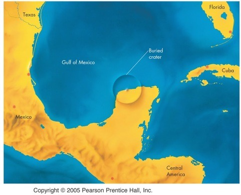

A long time ago, roughly 65.5 million years, something major happened. Scientists today refer to it as the K-T1 event, shortened from the Cretaceous-Tertiary extinction event. During this mass extinction, nearly 70% of the species living on Earth at the time disappeared all at once. Paleontologists have been baffled by this and there have been many theories as to what happened. However, they all agree that the K-T event marked the end of the Mesozoic Era, as well as setting the K-T boundary2, which just so happens to coincide with a theory about what happened during the K-T event. In 1980, a team of scientists discovered that the chemical composition of the clay at the K-T boundary on the Earth's crust has an extreme amount of iridium. Because this element is so rare on Earth, yet found in outer space material, indicates that an extraterrestrial object might have caused the extinction, an object that could have been an asteroid3. The asteroid theory could only be plausible if the asteroid were roughly around ten kilometers in diameter, and if it were chondritic. However, many in the field were skeptical about this theory, stating that if an asteroid that size would have crashed into the Earth, there would definitely be a crater.
In 1990, Alan Hildebrand, a cosmochemist, found data collected in the Mexican region of Yucatan. The data showcased evidence of a 180 kilometer diameter ring called Chicxulub. Chicxulub had been age dated, and it's 65 million years old. With this knowledge, the asteroid theory has gained credibility. However, we can never exactly pinpoint what caused the dinosaurs to go extinct.